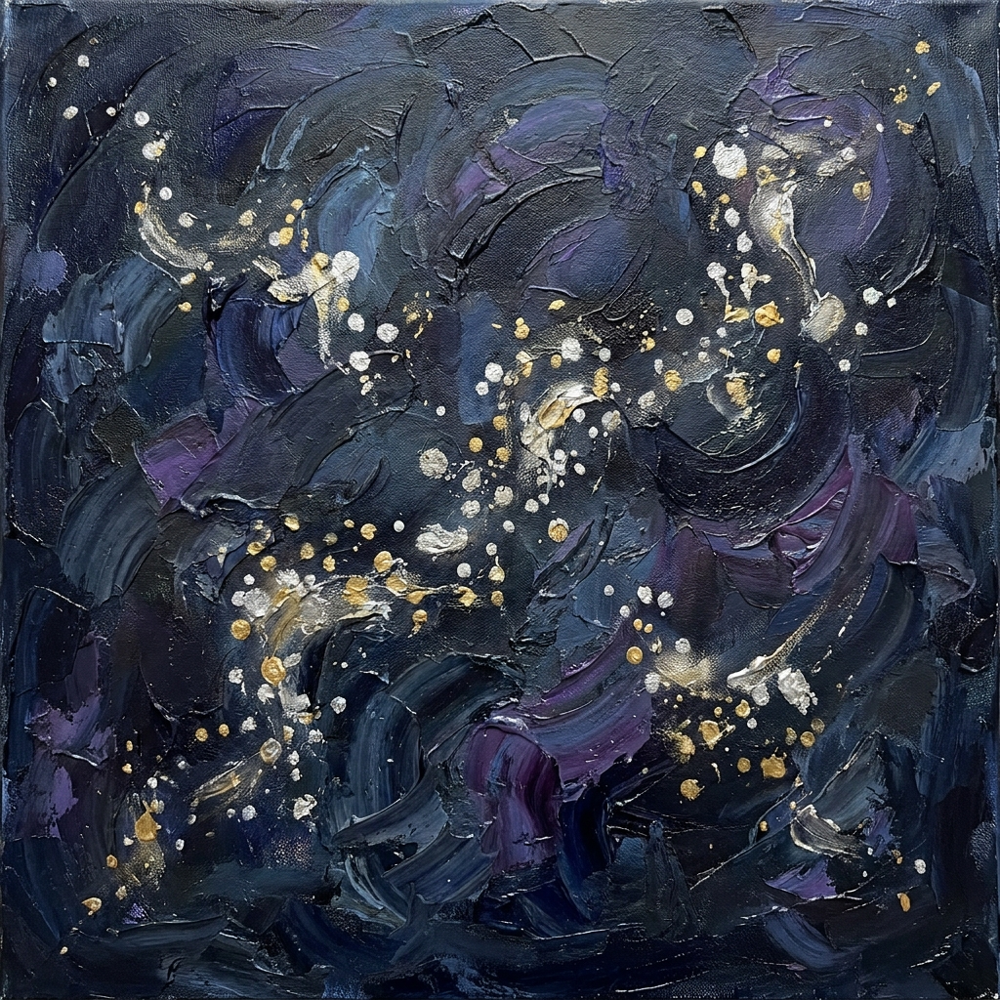

Senza luna

Questa sera la luna è via
ma la notte, la notte
si è vestita di sontuose stelle
luminosi grappoli
che creano disegni in cielo,
che ispirano a dar loro un nome.
ma la notte, la notte
si è vestita di sontuose stelle
luminosi grappoli
che creano disegni in cielo,
che ispirano a dar loro un nome.
Meraviglia e stupore
catturano il respiro,
rubo con gli occhi
e tutto l'universo
è adesso in me.
catturano il respiro,
rubo con gli occhi
e tutto l'universo
è adesso in me.
In un angolo del cuore
aspetterò
che il buio diventi luce,
che pensieri nati nella notte
fioriscano idee
mai esistite prima.
aspetterò
che il buio diventi luce,
che pensieri nati nella notte
fioriscano idee
mai esistite prima.
Paola Spremulli